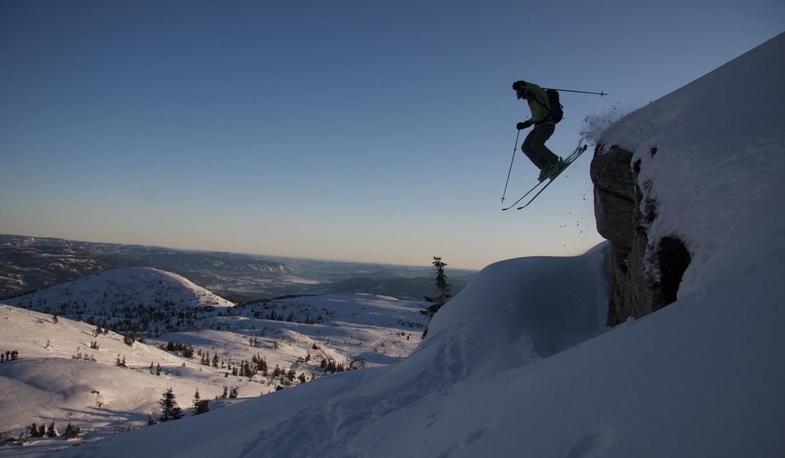
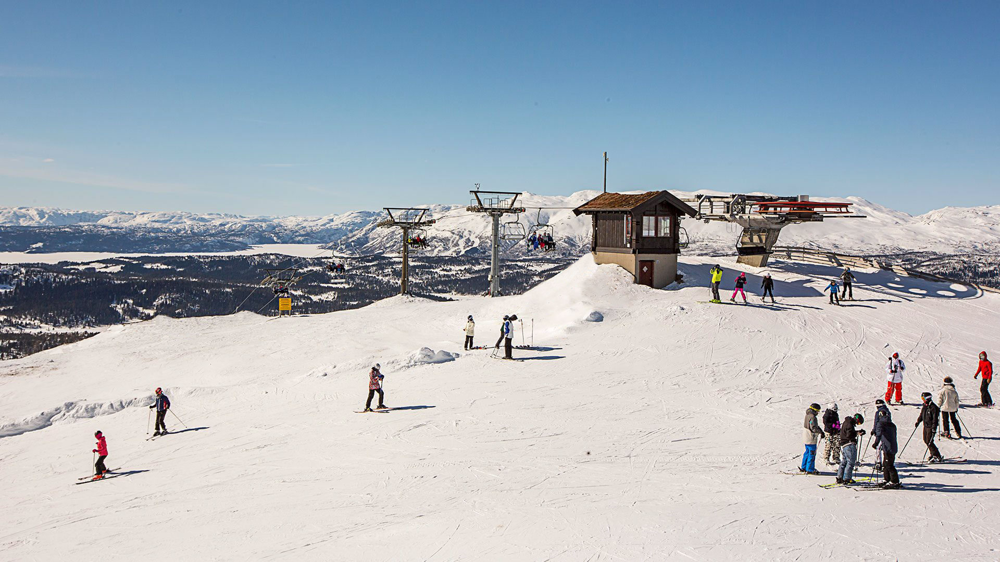
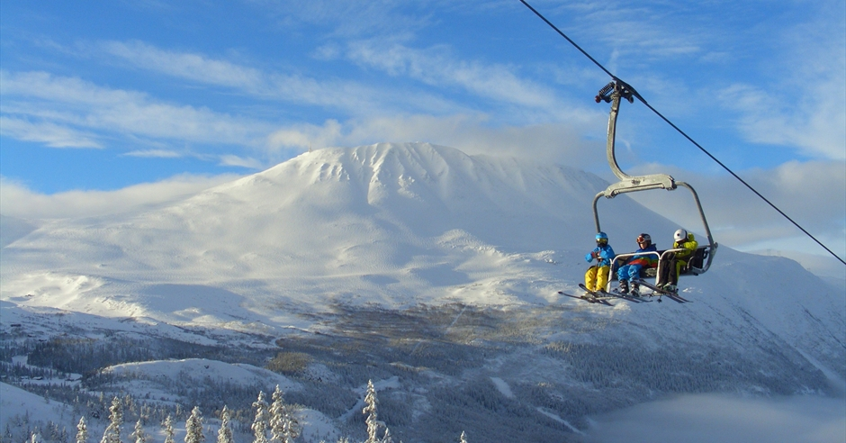
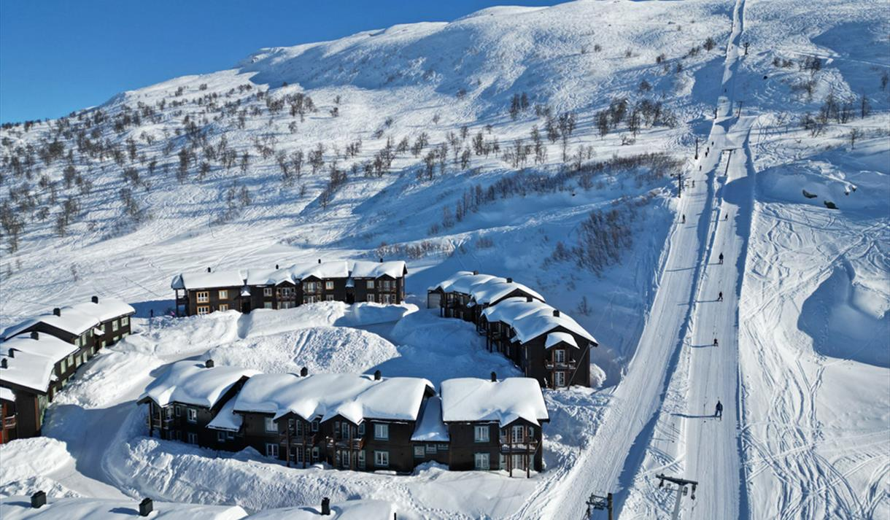
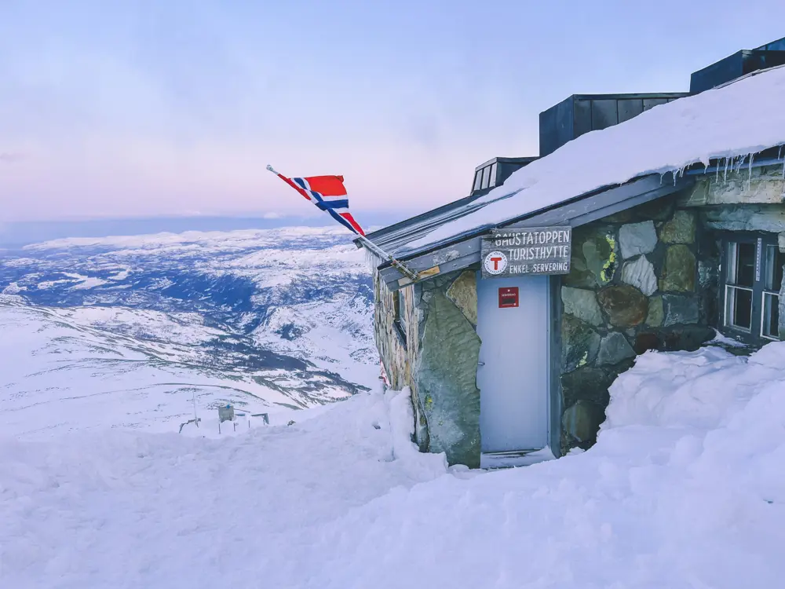
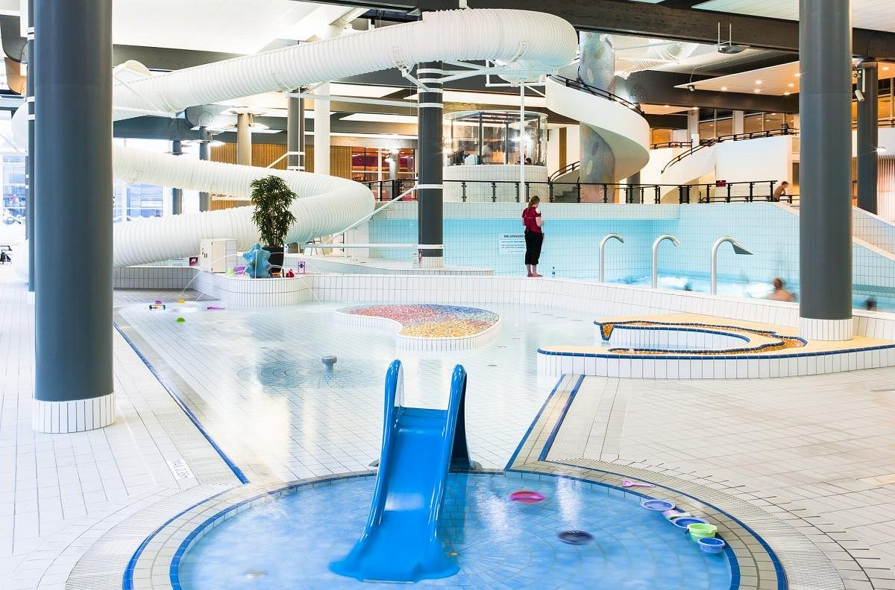
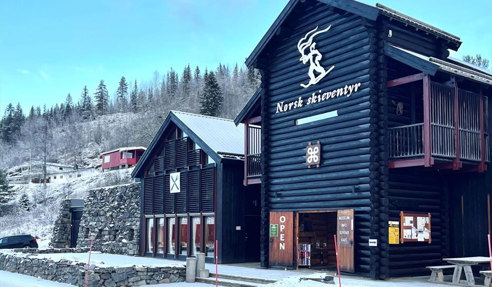
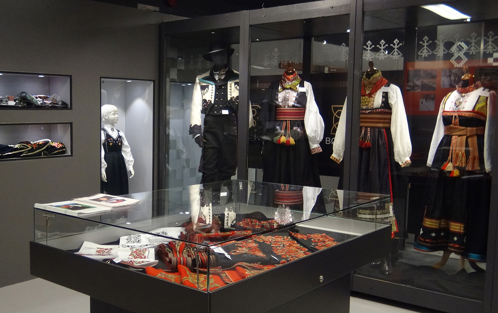

Topp 3 ski destinasjoner i Telemark

Lifjell Skisenter
Lifjell Skisenter, beliggende 12 km fra Bø i Telemark, er et familievennlig skianlegg med to heiser og fem nedfarter som varierer i lengde fra 300 til 1200 meter. Anlegget inkluderer også Lifjell Vinterland, et eget område ideelt for barn og nybegynnere innen alpint og snowboard, med en enkel løype på ca. 350 meter utstyrt med tallerkenheis.
Lifjell Skisenter tilbyr også skiutleie, skiskole og serveringssteder i bakken, noe som gjør det til et komplett reisemål for vinteraktiviteter.
Klikk her! for å laste ned skiløype kart.

Rauland Skisenter
Rauland Skisenter er et av Norges største skianlegg, beliggende i Vinje kommune i Telemark. Anlegget består av tre sammenkoblede skiområder: Tiur, Holtardalen og Vierli, som til sammen tilbyr 12 heiser og 26 løyper av varierende vanskelighetsgrad, med en total løypelengde på 35 km.
Rauland Skisenter er spesielt familievennlig, med dedikerte barneområder utstyrt med skibånd og enkle heiser. På Vierli finner man et aktivitetsområde for barn, inkludert miniscootere og akebakker. Barn under 6 år med hjelm kjører gratis i hele anlegget.
Klikk her! for å laste ned skiløype kart.

Gausta Skisenter
Gausta Skisenter, beliggende ved foten av Gaustatoppen i Telemark, er et familievennlig skianlegg kjent for sine snøsikre forhold. Anlegget tilbyr 37 løyper av varierende vanskelighetsgrad, betjent av 13 heiser, noe som gir utfordringer og opplevelser for både nybegynnere og erfarne skiløpere.
For de yngste finnes det dedikerte barneområder med tilpassede løyper og aktiviteter, samt en skiskole som tilbyr kurs for alle aldre og ferdighetsnivåer. Snowboardere og twintip-entusiaster kan glede seg over snøparker med hopp og rails.
Klikk her! for å laste ned skiløype kart.
Topp 3 hytte destinasjoner i Telemark

Lifjelltunet - Bø
Lifjelltunet er en familievennlig hyttegrend med 50 hytter, beliggende på toppen av Lifjell i Bø i Midt-Telemark. Den solrike beliggenheten gir flott utsikt over Telemarks fjellandskap, og gjør det til et ideelt utgangspunkt for både fotturer og skiturer. Lifjell Ski Resort ligger kun 200 meter unna, og tilbyr alpinmuligheter med to skiheiser og tre nedfarter.
Hyttene varierer i størrelse, med kapasitet fra 4 til 10 sengeplasser, og er utstyrt med fasiliteter som internett og kabel-TV.
I tillegg er det kun 12 km til Bø sentrum, som tilbyr et bredt spekter av tjenester.

Haukelifjell hytte
Haukelifjell er et populært område for hytteutleie, spesielt attraktivt for vintersportentusiaster. Området tilbyr moderne leiligheter og hytter i ulike størrelser, mange med ski inn/ut-muligheter til Haukelifjell Skisenter.
Haukeliseter Fjellstue, Norges største og mest besøkte DNT-hytte, ligger også i området og tilbyr overnatting for de som ønsker en tradisjonell fjellstueopplevelse.
Haukelifjell er dermed et ideelt reisemål for de som ønsker å kombinere hytteopphold med vinteraktiviteter i vakre omgivelser.

Gaustablikk Fjellhytter
Gaustablikk er et populært hytteområde i Telemark, kjent for sin beliggenhet nær Gaustatoppen, en av Norges mest kjente fjell. Her finner du moderne hytter med vakre utsikter over fjellene og innsjøene i området.
Gaustablikk hytte er et ideelt reisemål for ski- og vinterentusiaster. Området tilbyr nærhet til Gaustablikk Skisenter, som har et variert utvalg av skiløyper, heiser og snowboard muligheter. Hyttene ligger i et naturskjønt område med fantastisk utsikt over Gaustatoppen, og gir en koselig base etter en dag ute i snøen.
Topp 3 inne-aktivitet destinasjoner i Telemark

Skien Fritidspark
Skien Fritidspark er et stort og allsidig aktivitets- og opplevelsesområde i Skien, Telemark. Her kan du delta i en rekke innendørs og utendørs aktiviteter, inkludert svømming i det store badeanlegget, klatring, curling, og ishockey. Fritidsparken har også et treningssenter, en bowlinghall, og muligheter for tennis og volleyball.
For familier finnes det flere lekeområder og muligheter for både fysisk aktivitet og avslapning, noe som gjør Skien Fritidspark til et populært valg året rundt.

Norsk Skieventyr - skimuseum i Morgedal
Norsk Skieventyr Museum i Morgedal, Telemark, er et unikt museum som hyller Norges status som skisportens fødested. Morgedal er kjent som "skisportens vugge", og museet gir et dyptgående innblikk i skihistorien, fra de første tradisjonelle skiene brukt av samene til utviklingen av moderne alpint og langrenn.
Her kan du se historiske skistaver, gamle ski og annet utstyr som har vært en del av utviklingen av skisporten. Museet forteller også om viktige skihistoriske personer, som Sondre Norheim, som regnes som en av de første store skisportpionerene. Skieventyr Museum er en flott attraksjon for både skiinteresserte og de som ønsker å lære mer om Norges kulturelle arv.

Bø museum
Bø Museum ligger i Bø i Midt-Telemark, og er et spennende lokalhistorisk museum som gir et innblikk i områdets kulturarv og tradisjoner. Museet består av flere bygninger, inkludert den gamle prestegården, og det gir besøkende muligheten til å utforske historien fra 1700- og 1800-tallet. Utstillingene dekker temaer som landbruk, håndverk, og hverdagsliv, og gir et innblikk i hvordan folk levde i Telemark gjennom tidene.
Bø Museum er et flott sted å besøke for dem som ønsker å kombinere kulturhistorie med en vinteropplevelse i Telemark.